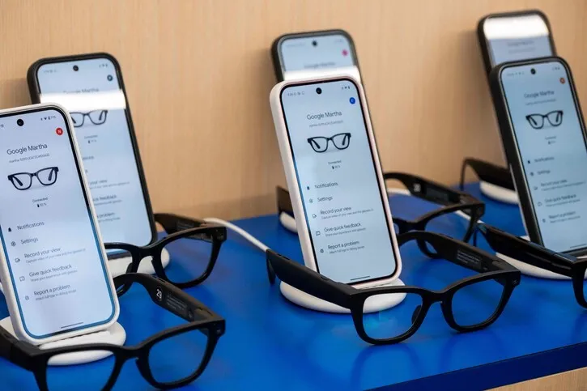

구글은 왜 젠틀몬스터에 투자했을까?
나연수 | 2025.07.09
기술보다 감성: '구글 글래스'의 실패에서 배운 것
구글은 2013년 '구글 글래스'로 웨어러블 시장에 도전했지만, 결과는 실패였습니다. 이유는 분명했습니다.
- 너무 기술 중심이었다
- UX보다 ‘기능성’을 강조했다
- 패션 아이템으로 보기에 부담스러웠다
이번에는 다릅니다. 젠틀몬스터는 ‘기술이 아닌 감성’으로 승부하는 브랜드입니다. 구글이 그들과 손잡은 것은, 기술을 감성으로 감싸기 위한 전략적 선택으로 보입니다.
이미치 출처 : 미에로기술
MZ세대의 취향, 스마트폰 다음은 안경?
MZ세대는 기능보다 ‘감도’를 소비합니다. 단순히 AI 기능이 탑재되었다는 이유만으로 제품을 구매하지는 않죠. 그런 의미에서 젠틀몬스터의 합류는 마케팅적으로도 결정적입니다.
- 트렌디한 디자인
- 인스타그래머블한 착용 이미지
- 글로벌 셀럽이 이미 착용한 브랜드력
이 모든 것이 구글이 전하고 싶은 스마트 글래스의 ‘두 번째 이야기’에 잘 어울립니다.
이미치 출처 : 미에로기술
구글·삼성·젠틀몬스터: K-라이프스타일 플랫폼이 될 수도
보도에 따르면 구글은 삼성과의 협력을 통해 스마트 안경의 하드웨어 기술을 개발하고, 젠틀몬스터는 디자인을 맡습니다. 이 삼자 협력은 단순한 기기 개발을 넘어, ‘한국형 스마트 라이프스타일’의 가능성을 보여줍니다.
-
예상 시나리오:
실시간 번역, 내비게이션, 일정 확인 → “스마트폰 없는 일상”
안경을 쓰면 연결되는 AI 비서 (Gemini)
감성적 디자인 + 기능적 만족 → 스마트 안경의 대중화
-
요약 :
구글은 기술이 아닌 디자인과 감성을 택했다.
스마트 안경은 단순 디바이스가 아닌 새로운 콘텐츠 플랫폼이 될 수 있다.
이미치 출처 : 미에로기술